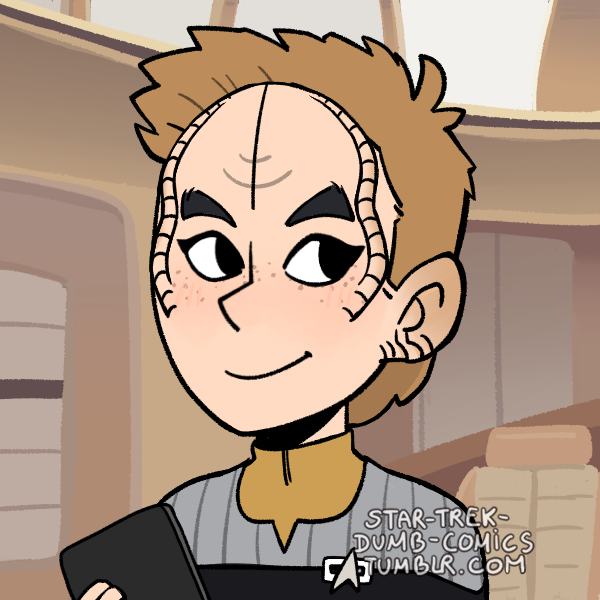

USS Alexandria
Location:: Romulan Star Empire, Shackleton Expanse/Locations/Shackleton Expanse/The Shackleton Expanse
Type:: Ship
Portrait::
The NCC-65337-B: An exploration vessel assigned to the Romulan Star Empire in the Beta Quadrant.
Description
A Federation New Orleans starship commanded by Kala Cerjaso. The Alexandria is outfitted for scout missions and pathfinding. It pushes into the edges of Federation space, makes first contact with new civilizations, and reports on astral phenomena. The crew is trained for a wide variety of circumstances, from diplomatic missions to emergency response.
Traits
- Federation Ship
- New Orleans Class
- Hope Ship
- Intelligence Division
Namesake
The USS Alexandria is the 2nd ship of its name. The original Alexandria was a vessel focused on making second contact. In particular, it was instrumental in maintaining an ongoing relationship with the Arcadians, who later became Federation council members.
The current NCC-65337-B Alexandria was commissioned in 2373 and was assigned to explore Romulan space after a gaining favor with Romulans for it's attempts to evacuate Romulus before the Supernova
Mission
Most recently, the Alexandria was posted in the Romulan Star Empire after recent treaties granted passage to the Federation in the region. Although it is primarily an exploration vessel, a portion of the crew was assigned by Starfleet Intelligence as a counter measure to potential Romulan aggression. Among these crew members is first officer Avery Helsing, who was assigned without the captain's approval.
Mission Logs:
- Alexandria Log 0 - Session 0:
Stardate -
The crew of the USS Alexandria was assembled and briefed for their first exploratory mission into Romulan territory. - Alexandria Log 1.1 - Bacchus-3:
Stardate 67988
The USS Alexandria arrived at Bacchus 3, where they discovered Romulans trying to activate some ancient alien ruins. The Romulans have had no contact with the outside for quite some time. - Alexandria Log 1.2 - Bacchus 3:
Stardate 67988
The away team on Bacchus 3 managed to deactivate the planet's subspace distortion waves, and recover a tricorder full of valuable information with it. - Alexandria Log 2.1 - Orion Heist:
Stardate 68063
USS Alexandria chased down an Orion freighter to recover a Tilikaal artifact. But as soon as it was recovered, a Romulan Warbird de-cloaked nearby. - Alexandria Log 2.2 - Boarded:
Stardate 68084
The crew fended off a Romulan boarding party while using using the artifact to boost the ship's shields subspace distortion capabilities. This lead to the ship being plunged deep into subspace temporarily. - Alexandria Log 3 - Peas to Meet You:
Stardate 67913.5
While transporting some colonists from the Re-Alpha System to the Yacci System, a fruit called "ice peas" caused many crew members to behave in erratic and strange ways. The crew was able to identify the cause as an allergic reaction and mitigated it by introducing a local mycelium to the ice peas transport substrate. - Alexandria Log 4.1 - Simplicity:
Stardate 66942
The USS Alexandria was intercepted by Rear Admiral Banna Stoker in a beat up Romulan shuttle. The Admiral then ordered the Alexandria to send an away team down to Pasqual-1 to search for signs of the Tilikaal. On the planet, the away team activated a Tilikaal device by accident, which electrocuted the locals on the planet. Meanwhile, a Romulan warbird IRW Adjacium warped into the Pasqual system and demanded the Admiral be beamed to them and claimed the Admiral to be under Tilikaal influence. - Alexandria Log 4.2 - Complexity:
Stardate 66942
While the away team on Pasqual-1 investigated the strange electro-magentic field on the planet, the Alexandria was attack by a Romulan scout ship. The Romulans demanded custody of Admiral Banna Stoker, claiming that Stoker had stolen from them. After a brief firefight, the Romulan ship was disabled.
Stoker was interrogated by Lt. Commander Markham, who discovered that Stoker was searching for evidence of more Tilikaal artifacts, claiming that her son had exhibited signs of Tilikaal influence and that Starfleet had covered it up. Ultimately, Stoker was arrested for attempting to destroy the Romulans in cold blood.
On the Romulan ship, Relja encountered an old nemesis of his, a Tal Shiar agent who had betrayed him. Reluctantly, he repaired the scout ships broken singularity drive and let them go. - Alexandria Log 4.3 - Ground Team:
Stardate 66942
While the Alexandria contended wit the Romulan scout ship above, the away team was captured and put on trial by the locals on Pasqual-1. A dozen Pasqualians were killed by the obelisk's attempt to administer a genetic evolution advancement. In the end, the away team was found innocent of murder.
They then went back to the obelisk, where a village elder named Jasper became amazed at the team's expertise in using it. They deactivated the obelisk, and Jasper offered to bring them to a holy site where the electromagnetic field would not affect them. This place was on the top of a mountain. On the way up, they were attack by mountain lion like creatures, and beamed up to the Alexandria as soon as they reach the peak. Jasper never got an explanation of the away team's visit, and watched them be carried away by golden light. - Alexandria Log 5.1 - Border Dispute:
Stardate 67097
The USS Alexandria was asked by Starfleet Command to respond to a distress call from the USS Nightingale, a nova class science ship. The ship had come a little too close to an uncontacted Romulan planet and was fired upon. A Romulan warbird was claiming the crew of the Nightingale as war prisoners.
Captain Cerjaso negotiated permission to send a team aboard the Nightingale to check for survivors and wounded. While performing repairs, the boarding party uncovered a Romulan disguised as a Vulcan named T'Lek amongst the crew. T'Lek attempted to escape to the Warbird, but was apprehended and beamed aboard the Alexandria after being caught stealing data from the Nightingale sensor array computers. - Alexandria Log 5.2 - Imposter:
Stardate 67097
With the Romulan spy T’Lek in the Alexandria’s brig, Lt. Cmdr. Markham began an interrogation to find out who they are and what they wanted from the USS Nightingale. Meanwhile, the away team on the Nightingale was tasked with securing the ship in case of another attack. The Romulans did decide to beam aboard the Nightingale in hopes of getting T’Lek.
T’Lek never revealed their intentions, but Markham decided to return T’Lek to the Romulan Warbird to prevent and further casualties on the Nightingale. Afterwards, the Alexandria was given permission to leave the system safely with the Nightingale in tow.
Eelara uncovered the data stolen by T’Lek: a list of systems the Nightingale was ordered to survey by Admiral Banna Stoker. - Alexandria Log 6 - Court Martial:
Stardate 67175
During the court martial trial of Banna Stoker, the defense attorney Loxor argued that Stoker was acting within her privileges as Admiral to rescue a people in peril. Andy argued that Stoker was a danger to the Federation, having gone to the Romulans for help, instead of Starfleet command. Stoker was court martialed and sent back to earth. After weeks of preparation, the court martial for Banna Stoker was set to begin. The defense attorney was a Ferengi names Loxor, and Andy Markham took up the role of prosecutor.
Plek investigated Banna Stoker's medical history and performed a psychoanalysis. He found a "fundy loop" in her brain: a short chain of neurons that fired in a loop, just enough to repeat an idea. The frequency of these brainwaves matched some of the background subspace activity found in the Bacchus system. With this information, Plek gave witness, telling the court about Stoker's condition. This brought to light the true potential of some alien influence on Stoker, even without her knowing.
Loxor made the case that Stoker was only acting in the interest of Starfleet's highest ideals. She answered the call of duty, doing everything in her power to protect what she believed to be an alien civilization in peril. In addition, many of Stoker actions could be justified given her rank as admiral. The rank gives a high degree of autonomy and ability to make judgement calls without consulting her surperiors.
Cmdr. Markham argued that Stoker presented a danger to the federation, having gone behind their back and put Federation officers in danger while keeping Starfleet command in the dark. Worst of all, when Stoker suspected that Starfleet would try to stop her from contacting the Tilikaal, she turned to people in the fractured Romulan Empire.
In the end, Stoker was court martialed and sent backto earth to spend time with her son. While Starfleet was confident that she was no longer fit to lead in Starfleet, the trial was not able to bring to light exactly what threat the Tilikaal might pose. In particular, Stoker's son, Avery, seems to have suffered from the same alien influence as his mother. But without access to the Tilikaal artifact, it's unclear how Avery become infected with the influence at all. - Alexandria Log 7 - Imminent Collision:
Stardate 67253
After Narendra Station picked up an unidentified object approaching the station at high warp speeds, the Alexandria was sent to investigate while the station prepared for a potential attack. They found a strange crystalline starship and started rudimentary and cooperative communication with it.
The crew found an unidentified torpedo lodged into the side of the crystalline structure, seemingly made just for the purpose of attacking this kind of starship. Once the torpedo was removed, the aliens in the ship revealed themselves: strange crystal beings who communicated through light refraction. They said thank you, and then left. - Alexandria Log 8.1 - Abyss Station:
Stardate 67330
The Alexandria followed a Romulan Warbird to a black hole with a neutronium lined space station and a singular rocky planet orbiting it. The planet had strange cultist gazing at the black hole waiting for the day it would "gaze back". The black hole was rotating to annihilate the planet with its radiation jets. On the station, the Alexandria's away team attacked a Romulan party on board.The Alexandria was sent to follow a Tal'Shiar agent to the Omega Draconis System. There, they found single rocky planet with no atmosphere but a series of underground structures about approximately 300 life signs. There was also a large space station made of obsidian-black neutronium. The Romulan warbird was also there.
As the Alexandria arrived, the black hole suddenly seemed to rotate. Massive high powered radiation jets moved to expel along the galactic plane. The planet, and all ~300 people on it, stood to be annihilated. One away team went down to the planet to start an evacuation, while another went into the space station to investigate what influence it has on the black whole and see what the Romulans were doing.
The team on the planet found a small group of pale humanoids with space travel capabilities but no warp capability. They spoke about how they had spent a very long gazing into the abyss waiting for the time when the abyss would gaze back at them. They seemed unconcerned about the radiation jets.
Meanwhile, a rescue team infiltrated the alien space station. Inside, they found large and humanoid-shaped automatons and a series of passageways leading into the center of the station. They also found a center with cloning vats full of people much like those on the surface of the planet. At the center, they took control of one of the automatons, and then opened the door to the control room. Inside, Romulans worked to take control of the station. Seeing the away team, the Romulans opened fire.
Crew Members
Department Heads
| Role4 | Rank + " " + file.link + "" | " (" + pronouns + ") - " + Species | "" + Type + "" | Portrait | " > " + Note |
|---|---|---|---|---|---|
| Commanding Officer | Captain Kala Cerjaso | (She / Her) - Bajoran | Supporting Character |  | On her first assignment as captain and in over her head. |
| XO, Chief of Security | Commander Avery Helsing | (he/him) - Human | Non-Player Character | No nonsense commander with strong ties to Starfleet Intelligence | |
| Science Officer | Lieutenant Commander Tropp | (he/him) - Denobulan | Player Character | - | - |
| Chief Engineer | Lt. Commander Relja Zecevic | (he/him) - Human | Player Character | A pragmatic, no-fuss engineer who takes the initiative. |
Command Division
| Role3 | Rank + " " + file.link + "" | "(" + pronouns + ") - " + Species | "" + Type + "" | Portrait | "> " + Note |
|---|---|---|---|---|---|
| Commanding Officer | Captain Kala Cerjaso | (She / Her) - Bajoran | Supporting Character | | On her first assignment as captain and in over her head. |
| XO, Chief of Security | Commander Avery Helsing | (he/him) - Human | Non-Player Character | No nonsense commander with strong ties to Starfleet Intelligence | |
| Intelligence Officer | Lt. Commander Andy Markham | (he/him) - Human | Player Character | Recruited by Starfleet Intelligence and trusted by the captain |
Sciences Division
| Role4 | Rank + " " + file.link + "" | "(" + pronouns + ") - " + Species | "" + Type + "" | Portrait | "> " + Note |
|---|---|---|---|---|---|
| Science Officer | Lieutenant Commander Tropp | (he/him) - Denobulan | Player Character | - | - |
| Ship Councillor | Lieutenant Plek | (he/him) - Ferengi | Supporting Character | Helps others find profit in their own wellbeing. | |
| Nurse | Lieutenant Alora | (She / Her) - Liberated Borg | Non-Player Character | Ex-Borg looking for a lost sense of connection | |
| Lab Technician | Lieutenant JG Grace Hopper | (She/Her) - Trill | Supporting Character |  | - |
Operations Division
| Role6 | Rank + " " + file.link + "" | "(" + pronouns + ") - " + Species | "" + Type + "" | Portrait | "> " + Note |
|---|---|---|---|---|---|
| Engineering Specialist | Lt. Commander Braag lorin Pag | (he/him) - Tellarite | Supporting Character | Previously covered Walter Beck's mistake before it went bad | |
| Chief Engineer | Lt. Commander Relja Zecevic | (he/him) - Human | Player Character | A pragmatic, no-fuss engineer who takes the initiative. | |
| Transport Chief | Lieutenant Renal Kayto | (she/her) - Betazed | Supporting Character |  | Enjoys quite moments with Relja occasionally. |
| Communications Officer | Lieutenant JG Durall | (he/him) - Trill | Non-Player Character | Got Eelara's preferred role on the ship. | |
| Operations Manager | Lieutenant JG Eelara | (she/her) - Denobulan | Player Character |  | A friendly face seeking wellbeing amongst the stars. |
| Field Medic | Petty Officer Third Class Walter Beck | (he / him) - Human | Player Character |  | A battle hardened medic who gets the job done. |
Passengers
| Role2 | Rank + " " + file.link + "" | "(" + pronouns + ") - " + Species | "" + Type + "" | Portrait | "> " + Note |
|---|---|---|---|---|---|
| Anthropology Expert | N/A T'Mel Marie Williamson | (She/her) - Human-Vulcan | Supporting Character |  | Xeno-Anthropologist who prefers caution over daring decision making. |
| Passenger | Civilian Hemel Jiqari | (She/her) - Bajoran-Cardassian | SC | Bonded with Andy Markham over having a difficulty relationship with their parents. |
Ship Locations
| File0 | "> " + Note2 |
|---|
Shuttles
The Alexandria is equipped with dozens of shuttles. Some notable ones are listed below!
| File0 | "> " + Note2 |
|---|